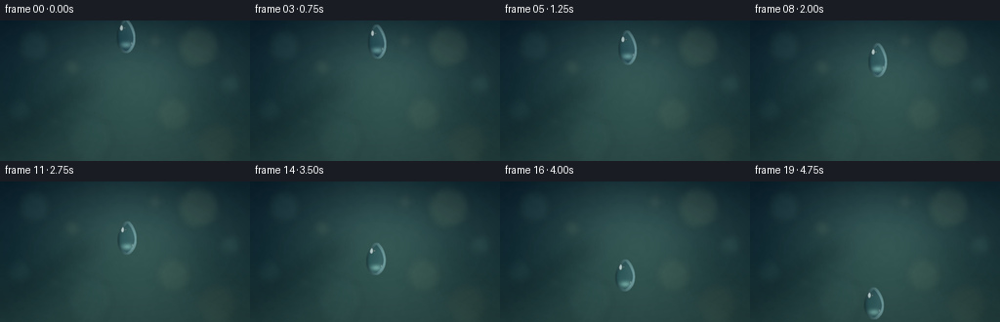
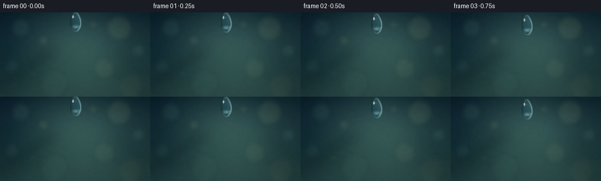

CODING AGENTS AS PIXEL WORLD MODELS
traex/GPT-5.6-Sol · instance_preservation_0044
点击播放 · 原生 RGB 像素
逐轮保存的候选
回放视频、检查图与代码变化。
每份候选均可单独播放。实际图片检查记录在下方工具轨迹中。
候选 01播放与检查图
点击播放 · 原生 RGB 像素


展开代码变化
--- 上一保存版本
+++ 本次保存版本
@@ -0,0 +1,162 @@
+from pathlib import Path
+import json, math
+import numpy as np
+from PIL import Image, ImageDraw, ImageFilter
+import artifact_io
+
+# Deterministic, fully procedural slow-motion macro shot.
+ROOT = Path(__file__).resolve().parent
+spec = json.loads((ROOT / "task_spec.json").read_text())
+W, H, N = spec["width"], spec["height"], spec["frames"]
+S = 4
+w, h = W*S, H*S
+rng = np.random.default_rng(3407)
+
+
+def make_background():
+ yy, xx = np.mgrid[0:h, 0:w]
+ X, Y = xx / S, yy / S
+ # A softly lit, out-of-focus blue-green natural background.
+ top = np.array([13., 37., 48.])
+ bot = np.array([38., 69., 68.])
+ v = (Y / H)[..., None]
+ arr = top*(1-v) + bot*v
+ # Sunlit mist behind the falling drop, kept intentionally out of focus.
+ glow = np.exp(-(((X-139)/77)**2 + ((Y-57)/69)**2))
+ arr += glow[..., None] * np.array([30., 38., 29.])
+ leftshade = np.exp(-(((X-0)/42)**2 + ((Y-77)/94)**2))
+ arr -= leftshade[..., None] * np.array([8., 9., 5.])
+ # Subtle horizontal atmosphere bands add depth without resembling rain.
+ arr += (2.2*np.sin(Y/19.0) + 1.1*np.sin((X+Y)/38.0))[..., None]
+ arr = np.clip(arr, 0, 255).astype(np.uint8)
+ base = Image.fromarray(arr, "RGB")
+
+ # Defocused branches / reeds in the far background.
+ silhouettes = Image.new("RGBA", (w,h), (0,0,0,0))
+ d = ImageDraw.Draw(silhouettes)
+ def line(points, fill, width):
+ d.line([(int(x*S),int(y*S)) for x,y in points], fill=fill, width=int(width*S), joint="curve")
+ line([(-15,132),(34,105),(65,82),(94,65)], (5,21,26,82), 7)
+ line([(0,143),(41,121),(77,108)], (8,28,30,55), 4)
+ line([(267,117),(226,94),(202,69)], (7,26,28,50), 5)
+ line([(256,143),(225,120),(196,105)], (9,27,27,40), 8)
+ silhouettes = silhouettes.filter(ImageFilter.GaussianBlur(8*S))
+ base = Image.alpha_composite(base.convert("RGBA"), silhouettes)
+
+ # Large optical bokeh discs. They are static and diffuse, so the one sharp
+ # foreground water drop remains unambiguous.
+ bokeh = Image.new("RGBA", (w,h), (0,0,0,0))
+ db = ImageDraw.Draw(bokeh)
+ discs = [
+ (35,26,17,(116,174,163,24)), (74,48,10,(196,207,148,22)),
+ (203,27,22,(180,199,139,27)), (236,65,12,(132,184,166,25)),
+ (20,92,13,(99,157,151,20)), (178,96,18,(199,203,139,17)),
+ (91,121,24,(100,153,143,15)), (222,126,21,(202,180,117,12)),
+ (159,21,7,(231,226,177,30)), (56,105,6,(198,218,182,18))]
+ for cx,cy,r,col in discs:
+ box=((cx-r)*S,(cy-r)*S,(cx+r)*S,(cy+r)*S)
+ db.ellipse(tuple(map(int,box)), fill=col, outline=(235,244,215,min(18,col[3])))
+ bokeh = bokeh.filter(ImageFilter.GaussianBlur(4.5*S))
+ base = Image.alpha_composite(base, bokeh).convert("RGB")
+
+ # Fine stationary texture stops the scene looking like a flat gradient.
+ a = np.asarray(base).astype(np.float32)
+ noise_small = rng.normal(0,1,(H,W))
+ noise_img = Image.fromarray(np.uint8(np.clip(noise_small*18+128,0,255))).resize((w,h),Image.Resampling.BICUBIC).filter(ImageFilter.GaussianBlur(2*S))
+ noise = (np.asarray(noise_img).astype(np.float32)-128)/15
+ a += noise[...,None]*0.7
+ return np.clip(a,0,255).astype(np.uint8)
+
+BG = make_background()
+
+
+def droplet_mask(cx, cy, width, height, lean):
+ # Hand-defined water outline: pointed shoulder, fuller lower bulb.
+ layer = Image.new("L", (w,h), 0)
+ poly=[]
+ steps=100
+ for side in (-1,1):
+ seq = range(steps+1) if side==-1 else range(steps,-1,-1)
+ for i in seq:
+ q=i/steps
+ # Smooth, tapered top with a heavier rounded lower half.
+ radius=(width*S/2) * (math.sin(math.pi*q)**0.58) * (0.73+0.32*q)
+ ly=(q-0.5)*height*S
+ lx=side*radius + lean*ly
+ poly.append((cx*S+lx, cy*S+ly))
+ ImageDraw.Draw(layer).polygon(poly, fill=255)
+ # Very slight blur only at subpixel scale; final downsample does the AA.
+ return layer.filter(ImageFilter.GaussianBlur(0.28*S))
+
+
+def render_frame(idx):
+ u=idx/(N-1)
+ # A gravity-shaped trajectory: increasing displacement between frames.
+ cx=129.0 + 2.0*math.sin(1.25*math.pi*u) - 0.7*u
+ cy=16.0 + 109.0*(0.20*u + 0.80*u*u)
+ pulse=math.sin(2*math.pi*(u*0.72+0.08))
+ dh=32.0 + 1.3*pulse
+ dw=19.2 - 0.8*pulse
+ lean=0.035*math.sin(2*math.pi*u+0.4)
+ mask_img=droplet_mask(cx,cy,dw,dh,lean)
+ m=np.asarray(mask_img).astype(np.float32)/255.0
+
+ yy,xx=np.mgrid[0:h,0:w]
+ dx=xx-cx*S; dy=yy-cy*S
+ # The drop acts as a tiny lens: magnified, vertically inverted local scenery.
+ srcx=np.clip(np.rint(cx*S + dx*1.32 - dy*0.035).astype(int),0,w-1)
+ srcy=np.clip(np.rint(cy*S - dy*0.82 + dx*0.025).astype(int),0,h-1)
+ lens=BG[srcy,srcx].astype(np.float32)
+ nx=dx/(dw*S/2+1e-5); ny=dy/(dh*S/2+1e-5)
+ # Cool glass-like body shading and internal lower caustic.
+ edge=np.clip((nx*nx+ny*ny-0.26)/0.74,0,1)
+ lens *= (0.93-0.16*edge[...,None])
+ lens += np.array([5.,15.,20.])
+ lens += (11*np.clip(nx,0,1)-7*np.clip(-nx,0,1))[...,None]
+ caust=np.exp(-(((dx/(6.0*S))**2)+((dy-9.0*S)/(3.1*S))**2))
+ lens += caust[...,None]*np.array([58.,69.,62.])
+
+ out=BG.astype(np.float32)*(1-m[...,None]) + np.clip(lens,0,255)*m[...,None]
+ rgba=Image.fromarray(np.uint8(np.clip(out,0,255)),"RGB").convert("RGBA")
+
+ # Thin bright/dark meniscus around the water lens.
+ hard=mask_img.filter(ImageFilter.MaxFilter(9))
+ inner=mask_img.filter(ImageFilter.MinFilter(9))
+ rim=np.clip((np.asarray(hard,dtype=np.int16)-np.asarray(inner,dtype=np.int16)),0,255).astype(np.uint8)
+ rim_a=(rim.astype(np.float32)/255.0)
+ # Directional Fresnel rim: bright right, dark left.
+ right=np.clip(0.50+0.50*nx,0,1)
+ hi_alpha=np.uint8(np.clip(rim_a*right*132,0,255))
+ lo_alpha=np.uint8(np.clip(rim_a*(1-right)*80,0,255))
+ hi=Image.new("RGBA",(w,h),(172,225,231,0)); hi.putalpha(Image.fromarray(hi_alpha))
+ lo=Image.new("RGBA",(w,h),(3,18,25,0)); lo.putalpha(Image.fromarray(lo_alpha))
+ rgba=Image.alpha_composite(rgba,lo)
+ rgba=Image.alpha_composite(rgba,hi)
+
+ # Stable, recognizable specular marks ride with the same droplet every frame.
+ shine=Image.new("RGBA",(w,h),(0,0,0,0)); ds=ImageDraw.Draw(shine)
+ # elongated upper-left reflection
+ x1=(cx-4.5)*S; y1=(cy-8.2)*S
+ ds.ellipse((int(x1-1.8*S),int(y1-3.3*S),int(x1+1.6*S),int(y1+2.8*S)),fill=(238,252,250,174))
+ # tiny hard sparkle beside it
+ ds.ellipse((int((cx-2.0)*S),int((cy-9.0)*S),int((cx-0.7)*S),int((cy-7.7)*S)),fill=(255,255,250,224))
+ # curved-looking lower-right reflected bead
+ ds.ellipse((int((cx+5.0)*S),int((cy+5.5)*S),int((cx+6.5)*S),int((cy+9.2)*S)),fill=(208,242,240,95))
+ shine=shine.filter(ImageFilter.GaussianBlur(0.45*S))
+ # Ensure shine stays inside the droplet.
+ sa=np.asarray(shine.getchannel("A"),dtype=np.float32)*(m)
+ shine.putalpha(Image.fromarray(np.uint8(sa)))
+ rgba=Image.alpha_composite(rgba,shine)
+
+ # Downsample with high-quality antialiasing; add a restrained cinematic vignette.
+ frame=rgba.convert("RGB").resize((W,H),Image.Resampling.LANCZOS)
+ a=np.asarray(frame).astype(np.float32)
+ yy0,xx0=np.mgrid[0:H,0:W]
+ rr=((xx0-W/2)/(W/2))**2+((yy0-H/2)/(H/2))**2
+ vign=np.clip(1-0.095*np.maximum(rr-0.18,0),0.86,1.0)
+ a*=vign[...,None]
+ return np.uint8(np.clip(a,0,255))
+
+frames=np.stack([render_frame(i) for i in range(N)],axis=0)
+artifact_io.save(frames, ROOT)
+print(f"saved {frames.shape} {frames.dtype}; droplet falls from y=16 to y=125")
可观测工具轨迹
实际执行的命令与返回图片。
命令 1exit 0
/bin/bash -lc "cat prompt.txt && printf '\\n---RULES---\\n' && cat GENERATION_RULES.md && printf '\\n---SPEC---\\n' && cat task_spec.json"
命令 2exit 0
/bin/bash -lc "find . -maxdepth 2 -type f -printf '%p %s bytes\\n' | sort && printf '\\nTools:\\n' && command -v ffmpeg && command -v python3 && command -v convert || true"
命令 3exit 0
/bin/bash -lc "sed -n '1,240p' artifact_io.py"
命令 4exit 0
/bin/bash -lc "cat > generate.py <<'PY'
from pathlib import Path
import json, math
import numpy as np
from PIL import Image, ImageDraw, ImageFilter
import artifact_io
# Deterministic, fully procedural slow-motion macro shot.
ROOT = Path(__file__).resolve().parent
spec = json.loads((ROOT / \"task_spec.json\").read_text())
W, H, N = spec[\"width\"], spec[\"height\"], spec[\"frames\"]
S = 4
w, h = W*S, H*S
rng = np.random.default_rng(3407)
def make_background():
yy, xx = np.mgrid[0:h, 0:w]
X, Y = xx / S, yy / S
# A softly lit, out-of-focus blue-green natural background.
top = np.array([13., 37., 48.])
bot = np.array([38., 69., 68.])
v = (Y / H)[..., None]
arr = top*(1-v) + bot*v
# Sunlit mist behind the falling drop, kept intentionally out of focus.
glow = np.exp(-(((X-139)/77)**2 + ((Y-57)/69)**2))
arr += glow[..., None] * np.array([30., 38., 29.])
leftshade = np.exp(-(((X-0)/42)**2 + ((Y-77)/94)**2))
arr -= leftshade[..., None] * np.array([8., 9., 5.])
# Subtle horizontal atmosphere bands add depth without resembling rain.
arr += (2.2*np.sin(Y/19.0) + 1.1*np.sin((X+Y)/38.0))[..., None]
arr = np.clip(arr, 0, 255).astype(np.uint8)
base = Image.fromarray(arr, \"RGB\")
# Defocused branches / reeds in the far background.
silhouettes = Image.new(\"RGBA\", (w,h), (0,0,0,0))
d = ImageDraw.Draw(silhouettes)
def line(points, fill, width):
d.line([(int(x*S),int(y*S)) for x,y in points], fill=fill, width=int(width*S), joint=\"curve\")
line([(-15,132),(34,105),(65,82),(94,65)], (5,21,26,82), 7)
line([(0,143),(41,121),(77,108)], (8,28,30,55), 4)
line([(267,117),(226,94),(202,69)], (7,26,28,50), 5)
line([(256,143),(225,120),(196,105)], (9,27,27,40), 8)
silhouettes = silhouettes.filter(ImageFilter.GaussianBlur(8*S))
base = Image.alpha_composite(base.convert(\"RGBA\"), silhouettes)
# Large optical bokeh discs. They are static and diffuse, so the one sharp
# foreground water drop remains unambiguous.
bokeh = Image.new(\"RGBA\", (w,h), (0,0,0,0))
db = ImageDraw.Draw(bokeh)
discs = [
(35,26,17,(116,174,163,24)), (74,48,10,(196,207,148,22)),
(203,27,22,(180,199,139,27)), (236,65,12,(132,184,166,25)),
(20,92,13,(99,157,151,20)), (178,96,18,(199,203,139,17)),
(91,121,24,(100,153,143,15)), (222,126,21,(202,180,117,12)),
(159,21,7,(231,226,177,30)), (56,105,6,(198,218,182,18))]
for cx,cy,r,col in discs:
box=((cx-r)*S,(cy-r)*S,(cx+r)*S,(cy+r)*S)
db.ellipse(tuple(map(int,box)), fill=col, outline=(235,244,215,min(18,col[3])))
bokeh = bokeh.filter(ImageFilter.GaussianBlur(4.5*S))
base = Image.alpha_composite(base, bokeh).convert(\"RGB\")
# Fine stationary texture stops the scene looking like a flat gradient.
a = np.asarray(base).astype(np.float32)
noise_small = rng.normal(0,1,(H,W))
noise_img = Image.fromarray(np.uint8(np.clip(noise_small*18+128,0,255))).resize((w,h),Image.Resampling.BICUBIC).filter(ImageFilter.GaussianBlur(2*S))
noise = (np.asarray(noise_img).astype(np.float32)-128)/15
a += noise[...,None]*0.7
return np.clip(a,0,255).astype(np.uint8)
BG = make_background()
def droplet_mask(cx, cy, width, height, lean):
# Hand-defined water outline: pointed shoulder, fuller lower bulb.
layer = Image.new(\"L\", (w,h), 0)
poly=[]
steps=100
for side in (-1,1):
seq = range(steps+1) if side==-1 else range(steps,-1,-1)
for i in seq:
q=i/steps
# Smooth, tapered top with a heavier rounded lower half.
radius=(width*S/2) * (math.sin(math.pi*q)**0.58) * (0.73+0.32*q)
ly=(q-0.5)*height*S
lx=side*radius + lean*ly
poly.append((cx*S+lx, cy*S+ly))
ImageDraw.Draw(layer).polygon(poly, fill=255)
# Very slight blur only at subpixel scale; final downsample does the AA.
return layer.filter(ImageFilter.GaussianBlur(0.28*S))
def render_frame(idx):
u=idx/(N-1)
# A gravity-shaped trajectory: increasing displacement between frames.
cx=129.0 + 2.0*math.sin(1.25*math.pi*u) - 0.7*u
cy=16.0 + 109.0*(0.20*u + 0.80*u*u)
pulse=math.sin(2*math.pi*(u*0.72+0.08))
dh=32.0 + 1.3*pulse
dw=19.2 - 0.8*pulse
lean=0.035*math.sin(2*math.pi*u+0.4)
mask_img=droplet_mask(cx,cy,dw,dh,lean)
m=np.asarray(mask_img).astype(np.float32)/255.0
yy,xx=np.mgrid[0:h,0:w]
dx=xx-cx*S; dy=yy-cy*S
# The drop acts as a tiny lens: magnified, vertically inverted local scenery.
srcx=np.clip(np.rint(cx*S + dx*1.32 - dy*0.035).astype(int),0,w-1)
srcy=np.clip(np.rint(cy*S - dy*0.82 + dx*0.025).astype(int),0,h-1)
lens=BG[srcy,srcx].astype(np.float32)
nx=dx/(dw*S/2+1e-5); ny=dy/(dh*S/2+1e-5)
# Cool glass-like body shading and internal lower caustic.
edge=np.clip((nx*nx+ny*ny-0.26)/0.74,0,1)
lens *= (0.93-0.16*edge[...,None])
lens += np.array([5.,15.,20.])
lens += (11*np.clip(nx,0,1)-7*np.clip(-nx,0,1))[...,None]
caust=np.exp(-(((dx/(6.0*S))**2)+((dy-9.0*S)/(3.1*S))**2))
lens += caust[...,None]*np.array([58.,69.,62.])
out=BG.astype(np.float32)*(1-m[...,None]) + np.clip(lens,0,255)*m[...,None]
rgba=Image.fromarray(np.uint8(np.clip(out,0,255)),\"RGB\").convert(\"RGBA\")
# Thin bright/dark meniscus around the water lens.
hard=mask_img.filter(ImageFilter.MaxFilter(9))
inner=mask_img.filter(ImageFilter.MinFilter(9))
rim=np.clip((np.asarray(hard,dtype=np.int16)-np.asarray(inner,dtype=np.int16)),0,255).astype(np.uint8)
rim_a=(rim.astype(np.float32)/255.0)
# Directional Fresnel rim: bright right, dark left.
right=np.clip(0.50+0.50*nx,0,1)
hi_alpha=np.uint8(np.clip(rim_a*right*132,0,255))
lo_alpha=np.uint8(np.clip(rim_a*(1-right)*80,0,255))
hi=Image.new(\"RGBA\",(w,h),(172,225,231,0)); hi.putalpha(Image.fromarray(hi_alpha))
lo=Image.new(\"RGBA\",(w,h),(3,18,25,0)); lo.putalpha(Image.fromarray(lo_alpha))
rgba=Image.alpha_composite(rgba,lo)
rgba=Image.alpha_composite(rgba,hi)
# Stable, recognizable specular marks ride with the same droplet every frame.
shine=Image.new(\"RGBA\",(w,h),(0,0,0,0)); ds=ImageDraw.Draw(shine)
# elongated upper-left reflection
x1=(cx-4.5)*S; y1=(cy-8.2)*S
ds.ellipse((int(x1-1.8*S),int(y1-3.3*S),int(x1+1.6*S),int(y1+2.8*S)),fill=(238,252,250,174))
# tiny hard sparkle beside it
ds.ellipse((int((cx-2.0)*S),int((cy-9.0)*S),int((cx-0.7)*S),int((cy-7.7)*S)),fill=(255,255,250,224))
# curved-looking lower-right reflected bead
ds.ellipse((int((cx+5.0)*S),int((cy+5.5)*S),int((cx+6.5)*S),int((cy+9.2)*S)),fill=(208,242,240,95))
shine=shine.filter(ImageFilter.GaussianBlur(0.45*S))
# Ensure shine stays inside the droplet.
sa=np.asarray(shine.getchannel(\"A\"),dtype=np.float32)*(m)
shine.putalpha(Image.fromarray(np.uint8(sa)))
rgba=Image.alpha_composite(rgba,shine)
# Downsample with high-quality antialiasing; add a restrained cinematic vignette.
frame=rgba.convert(\"RGB\").resize((W,H),Image.Resampling.LANCZOS)
a=np.asarray(frame).astype(np.float32)
yy0,xx0=np.mgrid[0:H,0:W]
rr=((xx0-W/2)/(W/2))**2+((yy0-H/2)/(H/2))**2
vign=np.clip(1-0.095*np.maximum(rr-0.18,0),0.86,1.0)
a*=vign[...,None]
return np.uint8(np.clip(a,0,255))
frames=np.stack([render_frame(i) for i in range(N)],axis=0)
artifact_io.save(frames, ROOT)
print(f\"saved {frames.shape} {frames.dtype}; droplet falls from y=16 to y=125\")
PY
python3 generate.py
ls -lh pixels.npz index.html inspection.png frames/00.png frames/19.png"视觉工具实际返回图片 1

保存候选 1 份；完成命令 4 次；可验证图片返回 1 张。原始 API 响应与完整日志保留在本地。